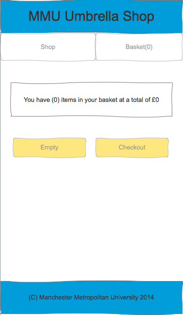

User Experience and Interaction Design
In this unit, students are taught how to effectively use Axure 8 and MatLab which are taught alongside the text,
Designing with the Mind in Mind by Jeff Johnson. This course focuses on making the user's
experience easy through the use of web sites and phone applications.
So far I have learned that creating something for the user goes further than it being aesthetically pleasing to the eye.
I am learning that making a site or an application accesible is way more important. I feel like I am doing good in this unit.
However, there is an optional part of every lab that is supposed to give the student some practice with MatLab and I have not been
completing this section of the lab. The main reason I decided to take part in the student exchange program is so that
I can learn new information that I probably will not learn back in the states. So, with this part I feel like I am being lazy, careless,
and taking for granted that I am even here in the U.K.
Official Prototype

Artificial Intelligence
I am not really sure what is going on in this unit so I do feel as though I am doing terrible
but here is a short snippet provided by wwww2.mmu.ac.uk :
This unit looks at the underlying theory and industrial applications of Artificial Intelligence paradigms.
It includes the underlying philosophy and principles behind AI software,
artificial neural networks, image processing, rule-based systems, knowledge engineering,
game theory, Minmax and Alphabeta searches, logic and reasoning, ontologies,
natural language processing and grammar checkers. Learning will be integrated via a large-scale case study,
building and evaluating a range of AI classifiers for two real-world datasets (e.g. Mammography, US Census Data).
This will develop transferrable skills in experiment design and evaluation.